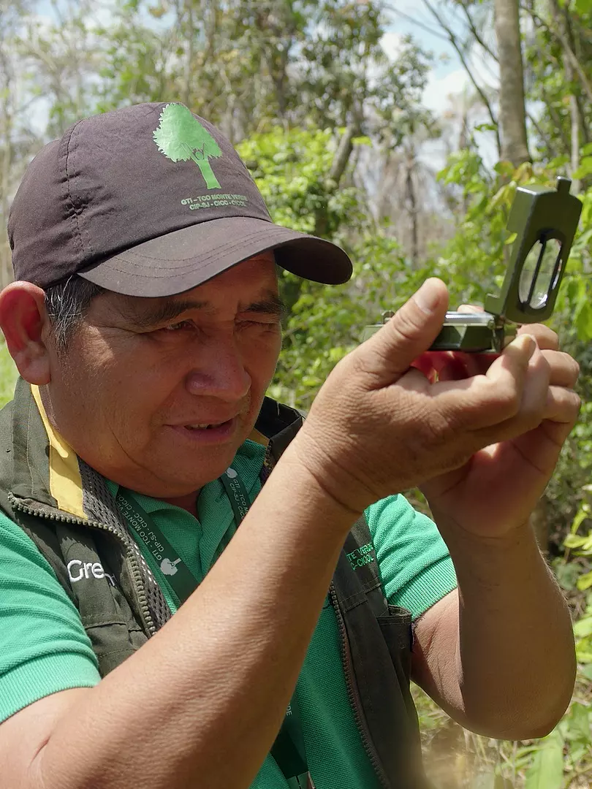
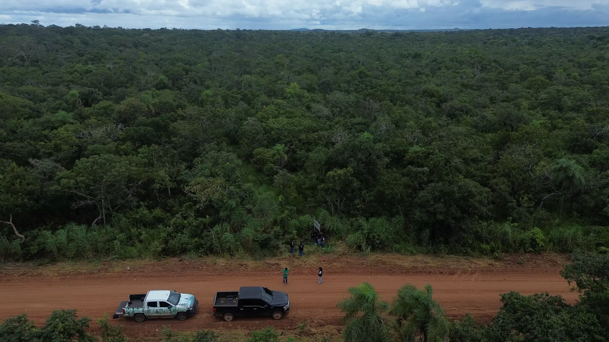
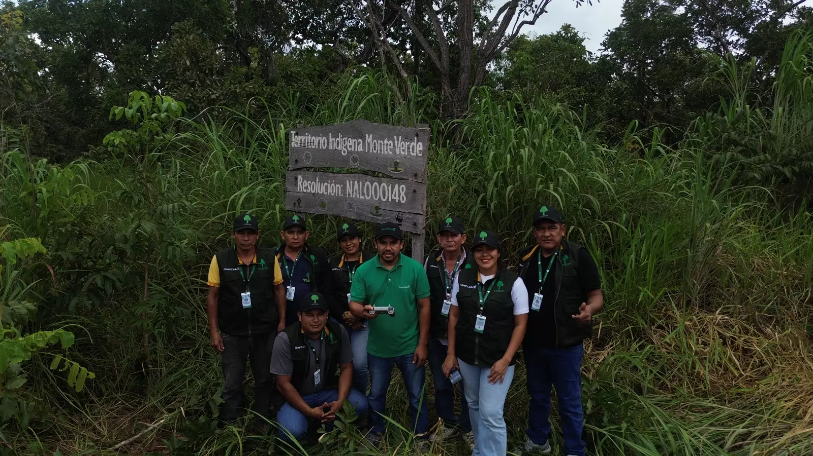
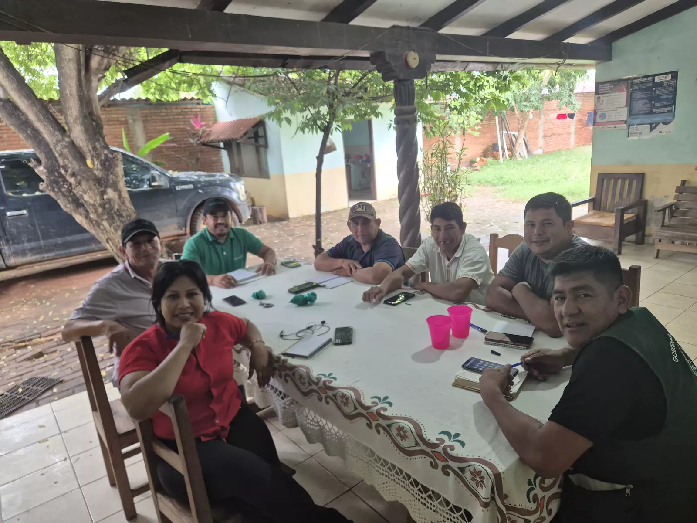
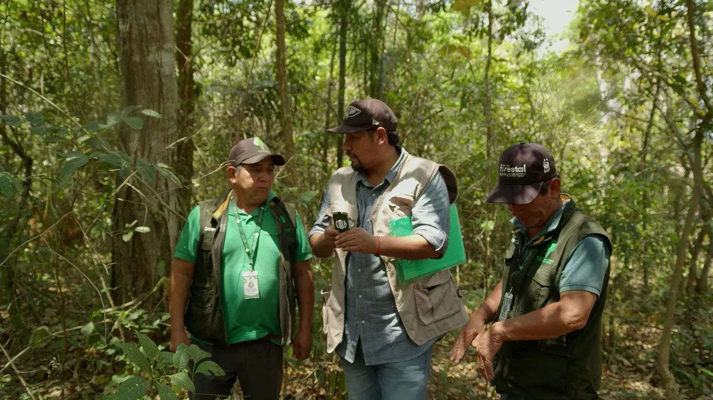
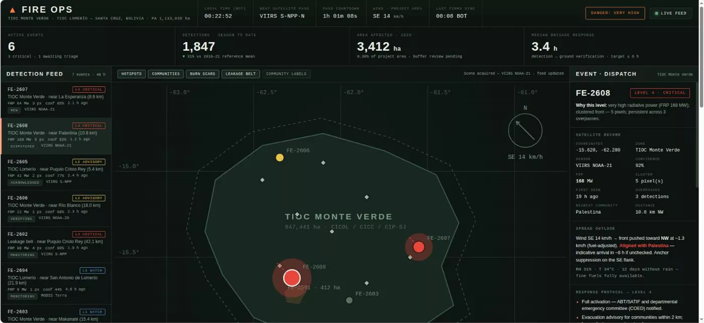
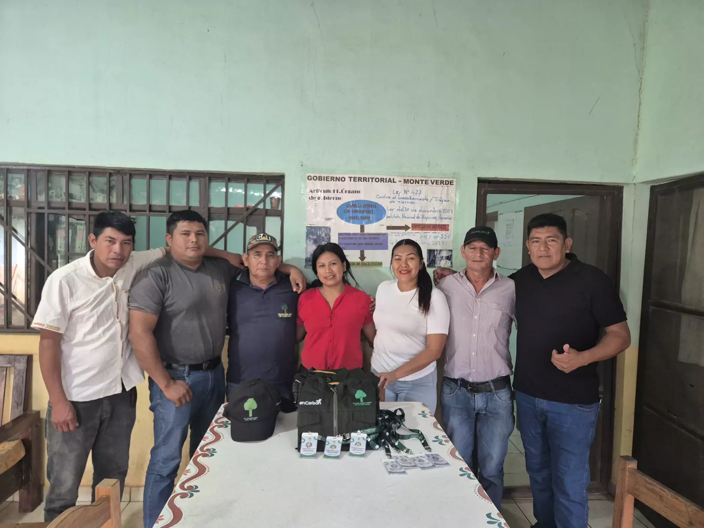
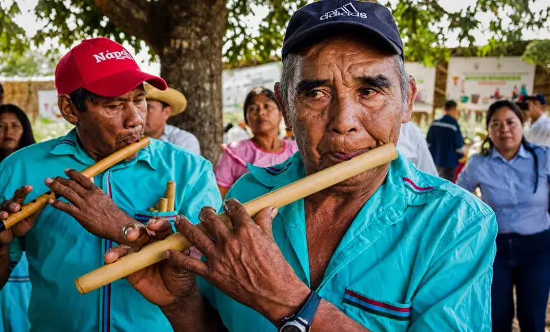
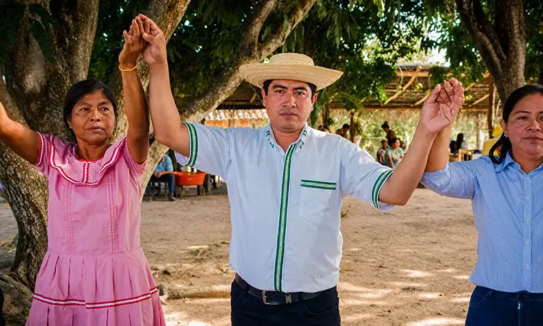
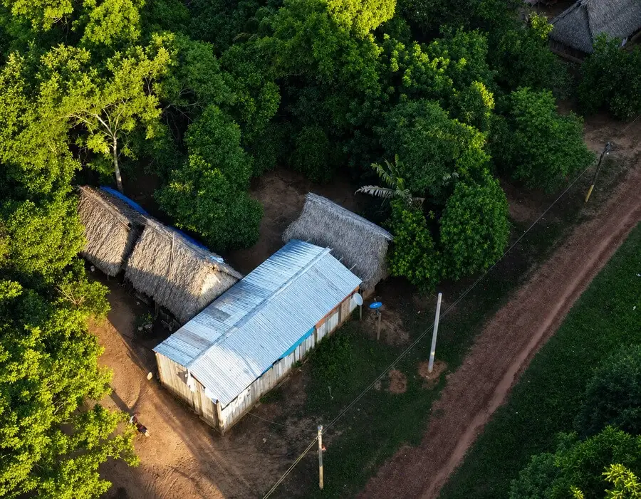

Conservación
Protección de ecosistemas forestales y reducción de amenazas.
Territorios indígenas · Chiquitanía · Bolivia
Green Carbon Bolivia integra conocimiento territorial, gobernanza indígena y evidencia técnica para impulsar soluciones climáticas de largo plazo.

Somos una empresa boliviana especializada en la implementación territorial de soluciones climáticas basadas en la naturaleza, con experiencia en conservación de bosques, gobernanza indígena, monitoreo ambiental y desarrollo comunitario.
Trabajamos donde la conservación realmente ocurre: en el territorio.
Nuestro trabajo
Protección de ecosistemas forestales y reducción de amenazas.
Trabajo coordinado con organizaciones y autoridades.
Información territorial, seguimiento ambiental y evidencia.
Fortalecimiento de capacidades e iniciativas sostenibles.

Superficie exacta a validar · SSOT
Nuestro proyecto principal
Explora el territorio
Dos territorios indígenas. Un paisaje forestal de importancia climática y social.
Ubicación de los territorios indígenas Monte Verde y Lomerío.
Falta imagen del mapaTerritorio y gobernanza


Falta foto de Lomerío
Gobernanza
Verificación y registro
Monitoreo territorial
Fuente de datos: enlace de monitoreo del proyecto Falta enlace
Centro de monitoreo
Consola de operaciones de incendios del territorio: detecciones satelitales, eventos activos y respuesta de brigadas.

Imagen ilustrativa del Centro de Operaciones de Incendios.
Incendios, desmontes u otras situaciones que puedan afectar el bosque.
Green Carbon Bolivia no sustituye a las autoridades competentes.
Se activa al definir privacidad y flujo internoVoces del territorio
Testimonio de hasta dos líneas.Falta retrato, testimonio y consentimientoVer historia
Testimonio de hasta dos líneas.Falta retrato, testimonio y consentimientoVer historia
Testimonio de hasta dos líneas.Falta retrato, testimonio y consentimientoVer historia
Testimonio de hasta dos líneas.Falta retrato, testimonio y consentimientoVer historia
Testimonio de hasta dos líneas.Falta retrato, testimonio y consentimientoVer historia
Impacto
Período: a definir · Solo cifras respaldadas · SSOT
Período: a definir · Solo cifras respaldadas · SSOT
Período: a definir · Solo cifras respaldadas · SSOT
Período: a definir · Solo cifras respaldadas · SSOT
Biodiversidad
Descripción breve de la especie.
Falta especie con evidencia territorial o fuente válida
Siguiente especieClima y carbono

Comunidades en acción



Contacto
Canal separado del contacto institucional.